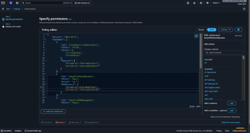
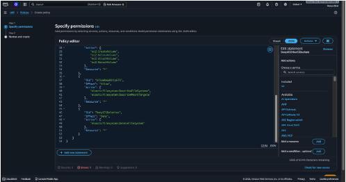
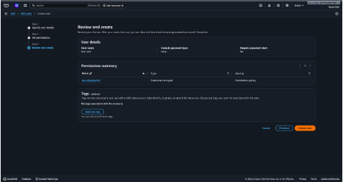
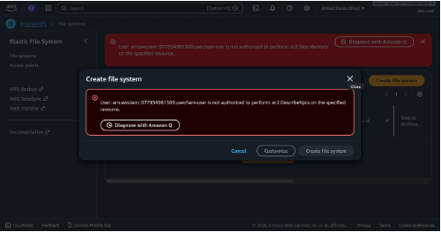
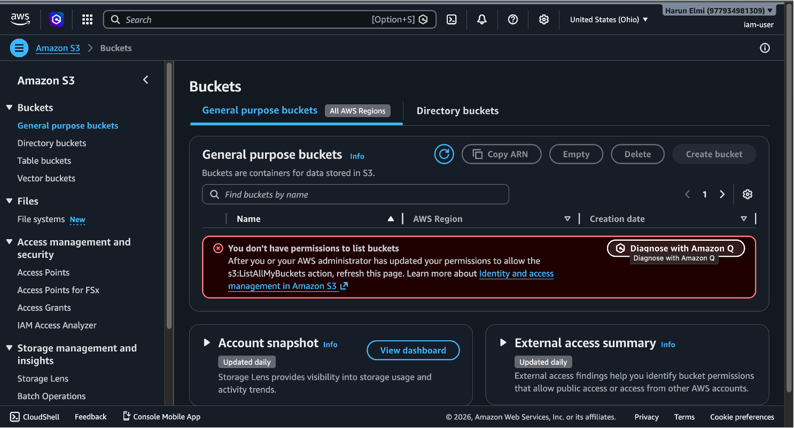
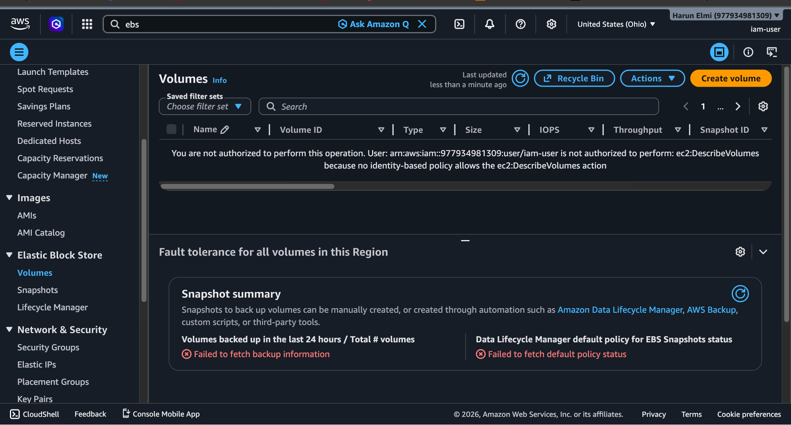

Creating the policy to block all access to S3 buckets in AWS.

Portion of the policy that blocks access to EBS and EFS for the IAM user.

Created an IAM user and attached the policy above.

Logged into AWS with the IAM user with no access to EFS.

No access to any S3 buckets.

And no access to any EBS volumes i created with my main account.